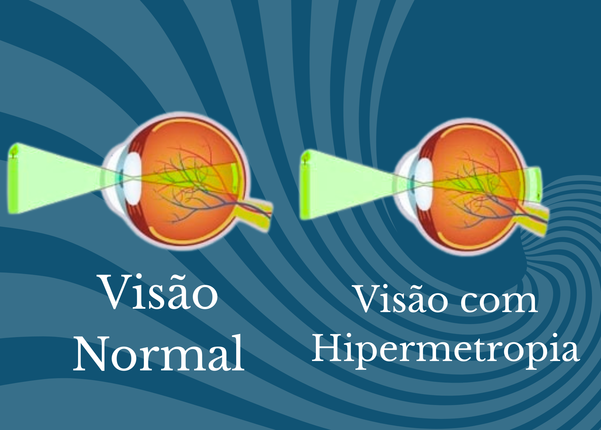

Hipermetropia
O que é Hipermetropia?
Imagine que seus olhos são como uma câmera desfocada para selfies. Na hipermetropia, você vê bem o que está longe (como uma paisagem), mas objetos próximos (como um livro) ficam borrados. Isso acontece porque o olho é um pouco mais "curtinho" do que o normal, fazendo a imagem se formar atrás da retina em vez de diretamente nela.
Como perceber os sinais?
Não é só dificuldade para ler! Fique atento se:
- Seus olhos ardem após usar o celular
- Você franze a testa para ver mensagens
- Sente dor de cabeça no fim do dia
- Precisa afastar o livro para ler
- As letras parecem dançar na tela do computador
Crianças: Dificuldade na escola e falta de interesse por leitura podem ser sinais!
Por que isso acontece?
Na maioria das vezes, é uma herança genética - como ter olhos azuis ou cabelo cacheado. Mas também pode surgir por:
- Formato ocular: Olho mais curto que o normal (como uma bola achatada)
- Córnea "plana": Pouca curvatura para focar a luz
- Envelhecimento: Após os 40 anos, pode piorar com a presbiopia
Como é feito o diagnóstico?
Um teste simples no oftalmologista revela tudo:
- Teste da letrinha: A famosa tabela Snellen
- Autorefrator: Máquina que mapeia o erro refrativo
- Exame de fundo de olho: Para descartar outras condições
Dica: Leve seus óculos atuais - isso ajuda no ajuste do grau!
Dá para prevenir?
Como é genética, não há prevenção. Mas estas dicas ajudam:
- Iluminação adequada: Evite ler no escuro
- Regra 20-20-20: A cada 20 minutos de tela, olhe 20 segundos para algo a 6m
- Check-ups anuais: Principalmente se há casos na família
Opções de tratamento
Não precisa conviver com o desconforto! Temos soluções:
- Óculos de leitura: Com lentes convexas (mais grossas no centro)
- Lentes de contato: Ótimas para esportes e atividades físicas
- Cirurgia a laser (LASIK): Molda a córnea em 15 minutos
- Lentes intraoculares: Para casos graves em pacientes acima de 40 anos
Perguntas comuns
- "Melhora com a idade?" Pode piorar - a presbiopia se soma após os 40
- "Óculos engrossam os olhos?" Mitó! Lentes modernas são finas e leves
- "Cirurgia dói?" Não! Usamos colírios anestésicos